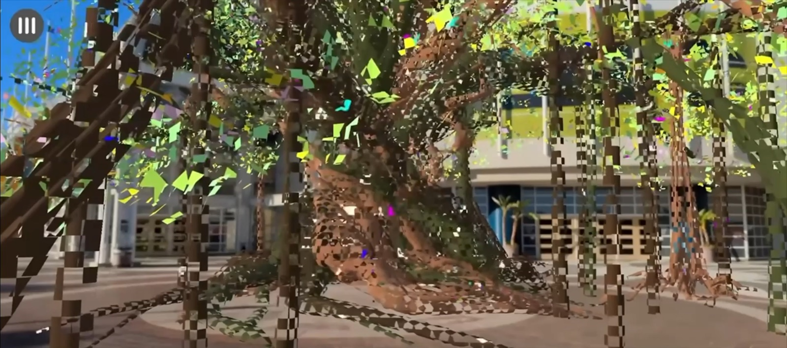

An independent creative studio
A little strange.
A whole
other world.
Immersive experiences, interactive stories, and worlds worth getting lost in.
Explore the work Art meets interaction. Curiosity takes over.
Art meets interaction. Curiosity takes over.01 / Selected work
Doors to somewhere else.
A collection of augmented realities, imagined places, and stories you can step into.

Under the Eye
A site-specific artwork that invites you in—and asks who’s watching.
View case study
The World of Emora
A hand-drawn world discovered through chance, symbolism, and reflection.
View case study
Chambers of Becoming
Step inside a world built for emotional honesty.
View case study
ARIA Engine
Stories hidden in the rooms of an underground skyscraper.
View case study
Buffalo Jump
Movement, interaction, and a player journey shaped through collaboration.
View case study02 / The studio
Curiosity. Craft. A bit of cosmic weird.
Cosmic Squid Studios is the creative practice of Syd Hoeper, exploring what happens when art, storytelling, and technology meet.
From a shared AR installation to a hand-drawn oracle deck, the work moves between physical and digital worlds. The through line is an invitation to explore, feel something, and look a little closer.
This collection brings together independent explorations, academic projects, and collaborative work. Each case study shares the context and my part in bringing it to life.
03 / Make contact
Got a strange
little idea?
Let’s see what it could become.
Open to creative collaborations and immersive projects.